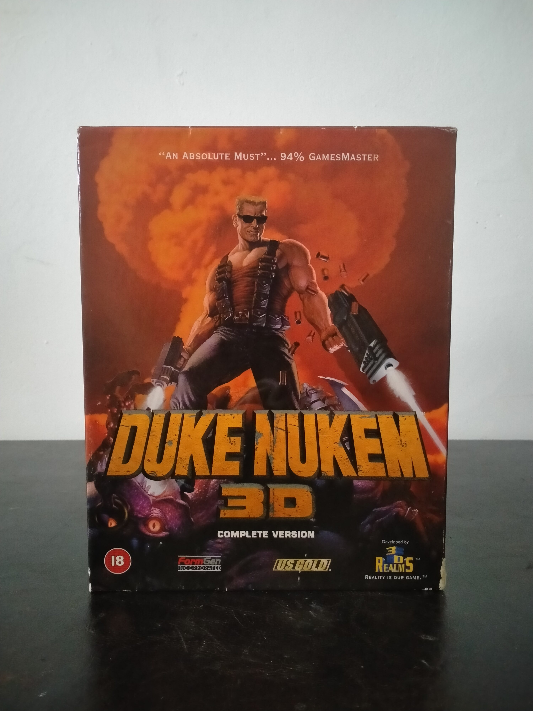

Ficha #000097
Duke Nukem 3D
Duke Nukem 3D es uno de los shooters en primera persona más influyentes de la segunda mitad de los años noventa. Desarrollado por 3D Realms sobre el Build Engine, trasladó el FPS de estética abstracta y laberíntica hacia escenarios urbanos reconocibles, cargados de interacción ambiental, humor irreverente, referencias cinematográficas, violencia exagerada y una personalidad protagonista muy marcada. La edición Complete Version distribuida comercialmente por FormGen y producida bajo licencia por U.S. Gold representa una de las ediciones europeas en caja grande para PC CD-ROM, con clasificación BBFC 18 y fuerte orientación al mercado adulto. Su valor archivístico reside tanto en la importancia cultural del juego dentro del auge del FPS posterior a Doom como en su papel dentro de la distribución física europea de títulos asociados a Apogee/3D Realms, FormGen y U.S. Gold.
- Formato
- Big Box
- Plataforma
- MsDos Win95
- Género
- Shooter en primera persona Acción Ciencia ficción Comedia adulta
- Serie
- Todos Big Box
- Desarrollador
- 3D Realms Entertainment
- Distribuidor
- FormGen Incorporated, U.S. Gold
- EAN
- —
Contenido de la edición
- Caja exterior Big Box
- Caja interior con bandeja plástica U.S. Gold
- CD-ROM en caja jewel case
- Tarjeta u hoja de registro U.S. Gold
- Pegatina U.S. Gold
- Documentación impresa promocional o de registro
Preservación
- Protección
- No determinado
- Formato recomendado
- ISO
- Jugable en virtualización
- Sí
Preservación recomendada mediante imagen completa del CD-ROM original, documentación fotográfica de la caja, jewel case, tarjeta de registro y materiales U.S. Gold incluidos. La ejecución virtual es viable en DOSBox o en un entorno Windows 95 virtualizado; conviene verificar en la edición concreta si existe comprobación de presencia del CD durante instalación o ejecución.